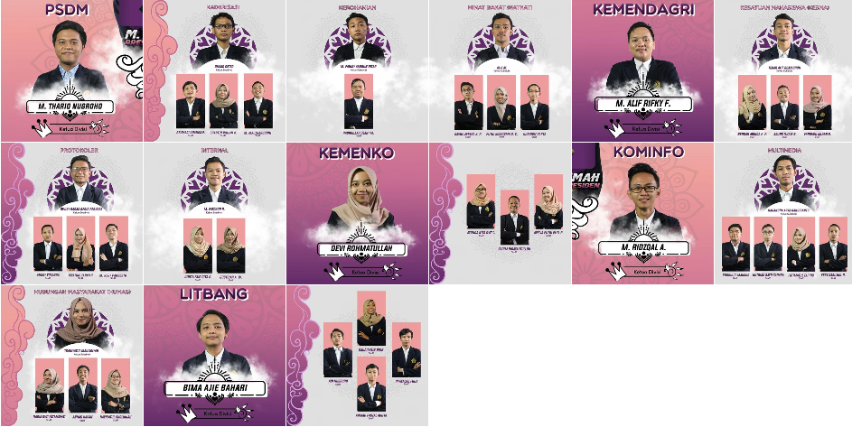

VISI & MISI
VISI:
Mewujudkan fakultas ilmu komputer yg harmonis dan progresif untuk mencapai prestasi
melalui pengembangan iptek dengan berlnadaskan iman dan takwa
MISI:
1. Memaksimalkan kegiatan kemahasiswaan untuk mencapai prestasi melalui pengembangan IPTEK
2. Mewadahi kontribusi mahasiswa Fasilkom dalam hal akademik dan hal minat bakat
3. Menjalin hubungan dan kerjasama atas dasar kekeluargaan dengan organisasi non-politik didalam maupun diluar Fakultas
4. Melaksanakan setiap kegiatan dengan disiplin, konsisten, dan bertanggung jawab
5. Menyelenggarakan kegiatan sosial yang berlandaskan Ketuhanan Yang Maha Esa
6. Aktif dan responsif terhadap permasalahan sekitar
Sejarah BEM Fasilkom
Pada tahun 2009 Program Studi Sistem Informasi merupakan program studi yang baru di universitas jember.
Setelah pengenalan kehidupan kampus (PK2) pertama di PSSI terjadi, berkumpulah orang-orang
yang bercita-cita PSSI memiliki sebuah Ormawa, tak peduli apapun bentuknya, BEM, HMJ, UKM, atau apapun.
Mereka adalah 7 mahasiswa angkatan 2009 yang belum saling kenal, yaitu :
- Diksy Media F sebagai Coordinator
- Ariesto Wiratama sebagai Secretary
- M. Fajrul Falah sebagai Rule and Law
- Hendro Agung Eko W. sebagai Graphic Designer
- Aditya Yudo Sulacsono sebagai Forum Communicator
- Rizqi Maulana Firdaus sebagai Member
- Raditya Andre sebagai Member
Hal ini ternyata direspon positif oleh Sekretaris III Program Studi Sistem Informasi yaitu Bpk. Anang Andrianto.
Sehingga putusan pertama pada rapat pendiri adalah nama ormawa yaitu HIMASIF (Himpunan Mahasiswa Sistem Informasi)
Program Studi Sistem Informasi pada tanggal 23 Agustus 2009 di Ruang Sidang Lt. 1 Program Studi Sistem Informasi
dengan format HMJ (Himpunan Mahasiswa Jurusan) setara BEM (Badan Eksekutif Mahasiswa)
mengingat masih berbentuk program studi.
Filosofi Kabinet

Struktur Organisasi

Divisi
